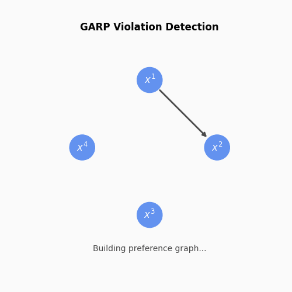

Axiomatic Consistency Tests#
Every choice adds edges to a directed observation graph (nodes = shopping trips, edges = revealed preferences). The axioms below define what “acyclic” means for this graph — GARP (allowing indifference), SARP (strict), and WARP (pairwise only).
GARP (Generalized Axiom of Revealed Preference)#
{kind=link}

Reference Implementation: validate_consistency(log)
The Generalized Axiom of Revealed Preference (GARP) constitutes the central behavioral benchmark for optimizing agents.
Formal Revealed Preference Relations:
Consider an agent facing price-quantity observations \(\{(p^t, x^t)\}_{t=1}^T\). We define the weak revealed preference relation \(R\) and the strict revealed preference relation \(P\) as follows:
Let \(R^*\) denote the transitive closure of the relation \(R\), representing the indirect revealed preference relation.
The GARP Condition:
Afriat’s Theorem (1967)
For any given dataset \(\{(p^t, x^t)\}_{t=1}^T\), the following propositions are logically equivalent:
The data satisfy the Generalized Axiom of Revealed Preference (GARP).
There exist positive scalars \(\{U_t\}\) and \(\{\lambda_t > 0\}\) that satisfy the Afriat Inequalities: \(U_s \leq U_t + \lambda_t \cdot p^t \cdot (x^s - x^t) \quad \forall s,t\)
The data are rationalizable by a continuous, monotonic, and concave utility function \(U(x)\).
Afriat’s Theorem establishes that GARP is both necessary and sufficient for the existence of a well-behaved utility function that rationalizes the observed choices.
References: Afriat (1967), Varian (1982), Chambers & Echenique (2016).
WARP (Weak Axiom of Revealed Preference)#
Reference Implementation: validate_consistency_weak(log)
The Weak Axiom of Revealed Preference (WARP) is a foundational consistency condition that precludes direct pairwise contradictions.
The WARP Condition:
Unlike GARP, WARP evaluates only direct inconsistencies (cycles of length 2) and does not account for transitive contradictions across longer sequences of choices.
Reference: Samuelson (1938).
SARP (Strong Axiom of Revealed Preference)#
Reference Implementation: validate_sarp(log)
The Strong Axiom of Revealed Preference (SARP) extends consistency by imposing acyclicity on the indirect revealed preference relation, effectively prohibiting indifference cycles.
The SARP Condition (Acyclicity):
SARP is a more restrictive condition than GARP and is necessary for the identification of unique, single-valued demand functions.
Reference: Houthakker (1950), Chambers & Echenique (2016).
Smooth Preferences and Differentiable Utility#
Reference Implementation: validate_smooth_preferences(log)
In econometric applications requiring differentiable utility specifications (e.g., for calculating price elasticities), the observed behavior must satisfy the following joint conditions:
SARP Consistency: Preclusion of all indifference cycles.
Local Injectivity: A unique mapping from prices to quantities such that:
Reference: Chiappori & Rochet (1987).
Acyclical Strict Preferences (Acyclical P)#
Reference Implementation: validate_strict_consistency(log)
This condition provides a more lenient consistency test by evaluating cycles exclusively within the strict revealed preference relation \(P\):
This criterion accounts for indifference by allowing cycles in the weak relation \(R\), provided no strict preference is violated.
Reference: Dziewulski (2023).
Generalized Axiom of Price Preferences (GAPP)#
Reference Implementation: validate_price_preferences(log)
GAPP constitutes the dual of GARP in the space of price vectors. We define the price preference relation \(R_p\):
The GAPP Condition:
This dual test evaluates whether an agent exhibits consistent preferences across different budget environments, independent of specific quantity bundles.
Reference: Deb et al. (2022).